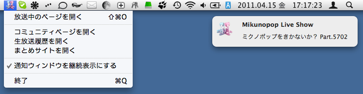

放送があったら通知してくれるアプリです（マック版のみ）。2011.04.16 改訂
ミクノポップ生放送があったら、通知してくれます。通知ウィンドウをクリックすると放送ページを開きます。

放送が始まったら Growl により通知され（右）、放送中はメニューバーにアイコンが現れます。
放送がないときは目立たないヒゲアイコンに。
MacOSX 10.5 以降が動作している、Intel Mac が必要です。
Growl が必要です（マカーならみんな入れてるよね！）。
※自動アップデート機能があるので、１度インストールしたら、自動的に通知されます。
| [2011.09.18] 1.02 | MikunoAlert_1.02.zip |
・アプリケーションバッジに on air の文字を出すようにしました。
・細かい点を調整しました。
| [2011.04.19] 1.01 | MikunoAlert_1.01.zip |
・64bit 用バイナリを追加しました。
| [2011.04.16] 1.00 | MikunoAlert_1.00.zip |
・自動アップデートの仕組みを追加しました。
・同じ放送の通知を複数回してしまうことがある問題を修正しました。
仕組み上、最大で２分程度、通知が遅れることがあります。
不具合、改善点や要望などありましたらご連絡ください。
免責：本ソフトウェアの使用によって生じたいかなる損害についても、作者は一切の責任を負いません。